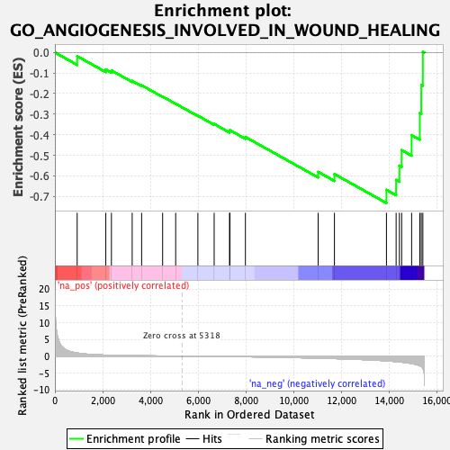
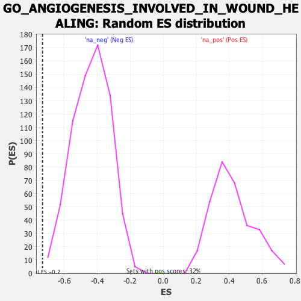

| | | Dataset | DE_genes |
| Phenotype | NoPhenotypeAvailable |
| Upregulated in class | na_neg |
| GeneSet | GO_ANGIOGENESIS_INVOLVED_IN_WOUND_HEALING |
| Enrichment Score (ES) | -0.7326133 |
| Normalized Enrichment Score (NES) | -1.685598 |
| Nominal p-value | 0.0014619883 |
| FDR q-value | 0.09418699 |
| FWER p-Value | 0.751 |
Table: GSEA Results Summary

Fig 1: Enrichment plot: GO_ANGIOGENESIS_INVOLVED_IN_WOUND_HEALING
Profile of the Running ES Score & Positions of GeneSet Members on the Rank Ordered List
| PROBE | GENE SYMBOL | GENE_TITLE | RANK IN GENE LIST | RANK METRIC SCORE | RUNNING ES | CORE ENRICHMENT | | 1 | HPSE | | | 933 | 0.942 | -0.0179 | No |
| 2 | TNFAIP3 | | | 2132 | 0.286 | -0.0825 | No |
| 3 | MIR34A | | | 2367 | 0.229 | -0.0873 | No |
| 4 | XBP1 | | | 3237 | 0.119 | -0.1382 | No |
| 5 | FOXC2 | | | 3632 | 0.090 | -0.1596 | No |
| 6 | CX3CL1 | | | 4512 | 0.041 | -0.2147 | No |
| 7 | B4GALT1 | | | 5058 | 0.012 | -0.2494 | No |
| 8 | CXCR4 | | | 5988 | -0.038 | -0.3078 | No |
| 9 | PRCP | | | 6670 | -0.086 | -0.3480 | No |
| 10 | GPR4 | | | 7313 | -0.137 | -0.3834 | No |
| 11 | SERPINE1 | | | 7331 | -0.139 | -0.3782 | No |
| 12 | PIK3CB | | | 7979 | -0.196 | -0.4112 | No |
| 13 | SRF | | | 11024 | -0.602 | -0.5811 | No |
| 14 | SMOC2 | | | 11707 | -0.743 | -0.5917 | No |
| 15 | GPX1 | | | 13885 | -1.418 | -0.6686 | Yes |
| 16 | DAG1 | | | 14290 | -1.654 | -0.6202 | Yes |
| 17 | ADIPOR2 | | | 14427 | -1.736 | -0.5506 | Yes |
| 18 | ETS1 | | | 14521 | -1.805 | -0.4752 | Yes |
| 19 | NDNF | | | 14939 | -2.218 | -0.4021 | Yes |
| 20 | CD34 | | | 15282 | -2.871 | -0.2947 | Yes |
| 21 | MCAM | | | 15344 | -3.126 | -0.1576 | Yes |
| 22 | ITGB3 | | | 15409 | -3.673 | 0.0040 | Yes |
Table: GSEA details [plain text format]

Fig 2: GO_ANGIOGENESIS_INVOLVED_IN_WOUND_HEALING: Random ES distribution
Gene set null distribution of ES for GO_ANGIOGENESIS_INVOLVED_IN_WOUND_HEALING